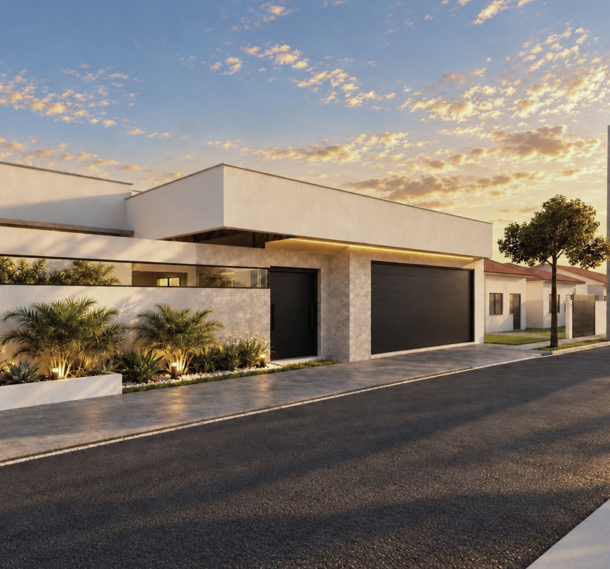
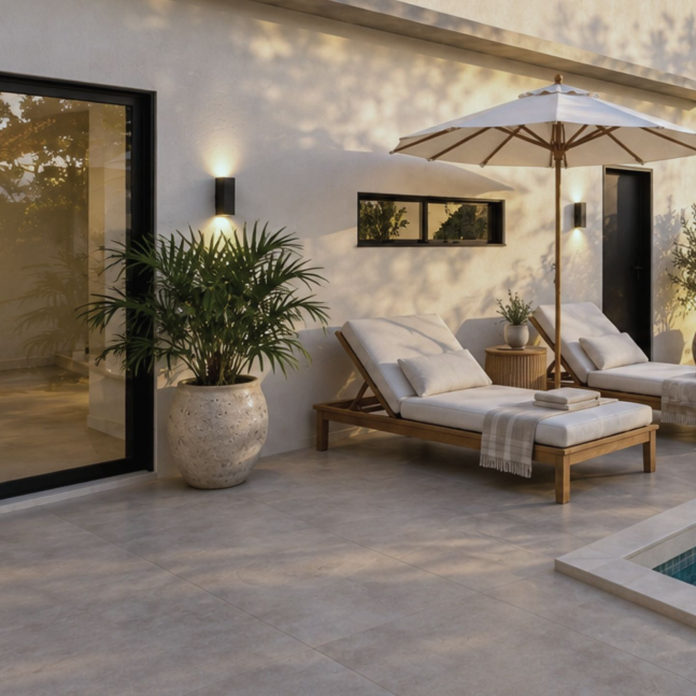
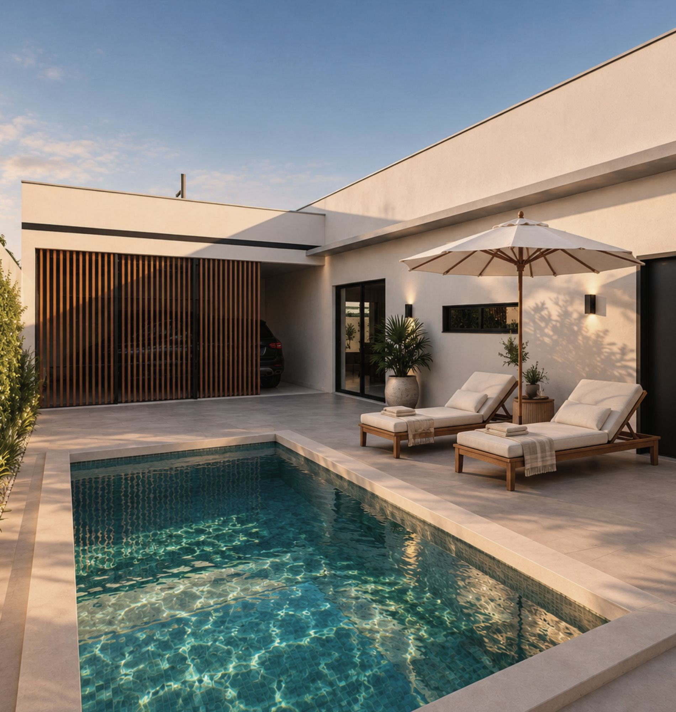
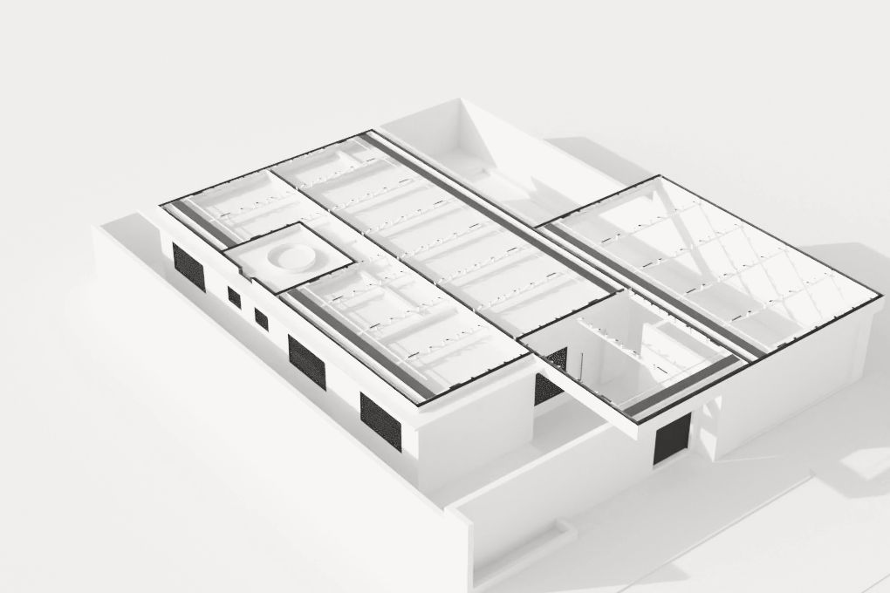
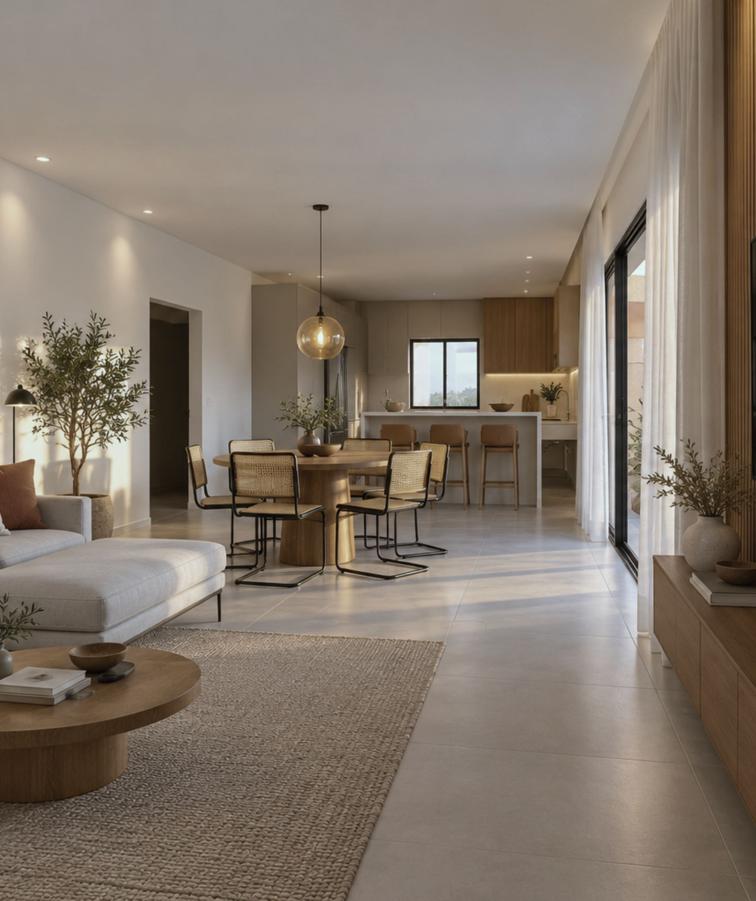
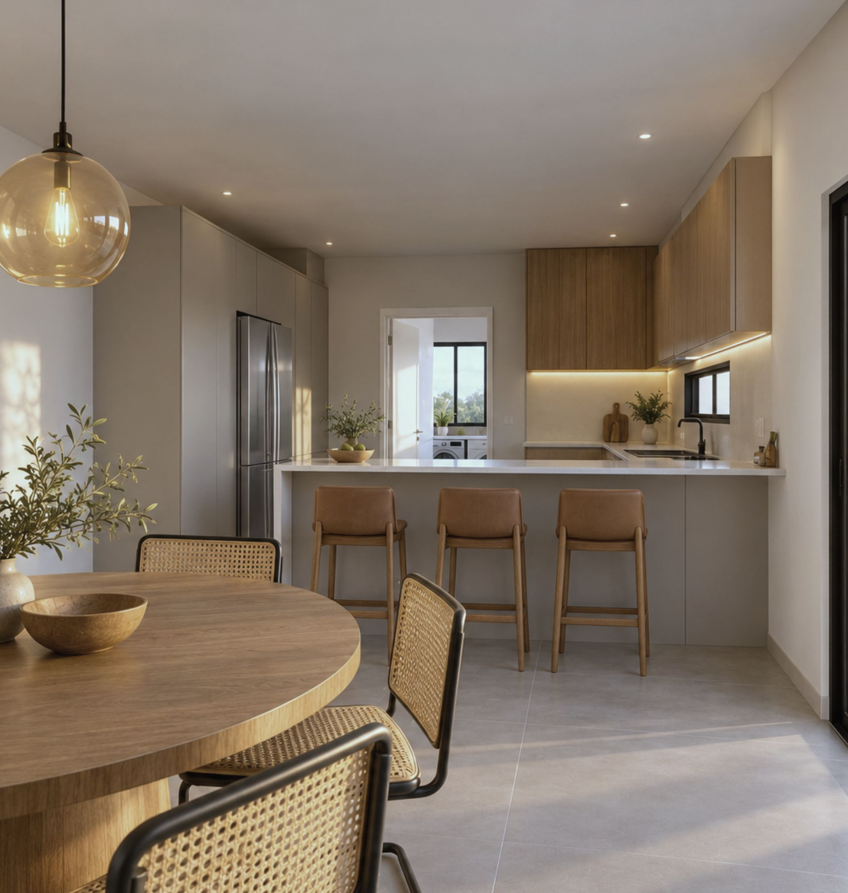
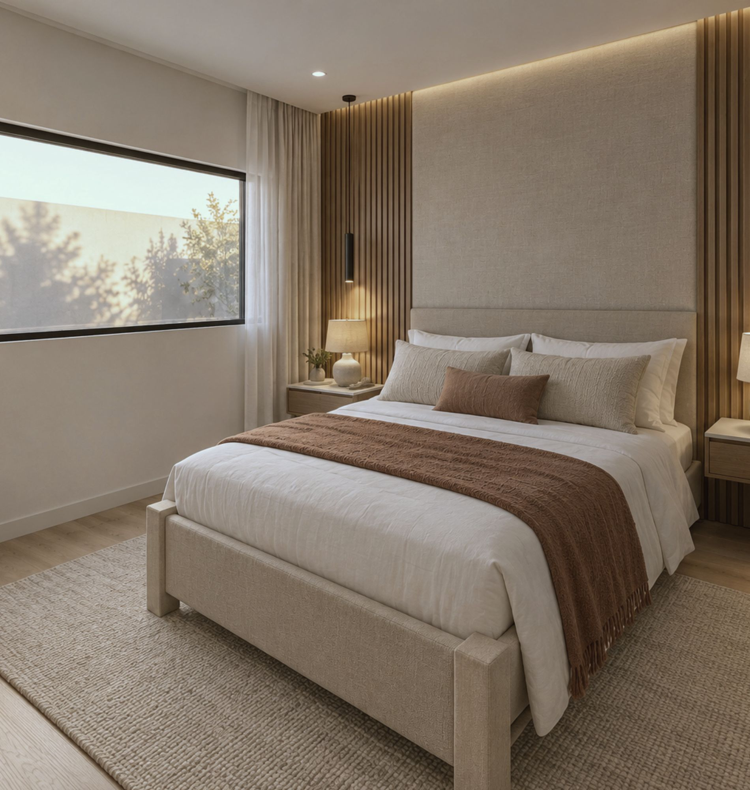
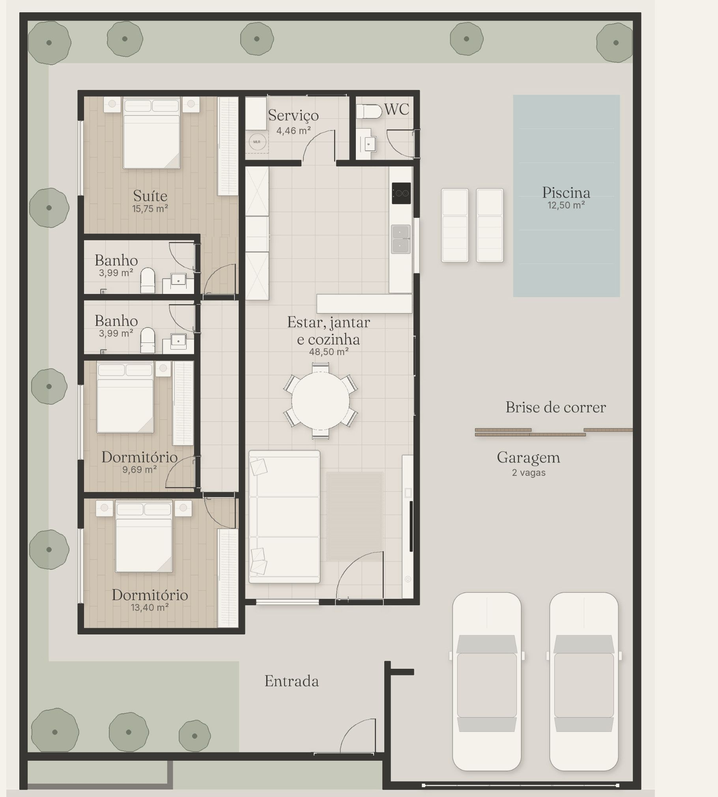

obras / casas
Casa Duo

Dois lotes somando 320 m² viraram uma casa térrea com piscina.
Três dormitórios, sendo uma suíte. Estar, jantar e cozinha integrados em 48,50 m², garagem para dois carros e piscina de 12,50 m².
Na frente, o muro ganha uma faixa de vidro discreta. Entre a garagem e a piscina, um brise de correr em madeira fecha ou abre a passagem.
O trabalho foi o projeto e o processo na prefeitura, da unificação dos lotes ao protocolo.
- Local
- Marília · SP
- Área construída
- 119,82 m²
- Terreno
- 320 m², em dois lotes de 8 × 20 m
- Programa
- Três dormitórios, uma suíte
- Social
- 48,50 m² integrados
- Telheiros
- 58,42 m²
- Piscina
- 12,50 m²
- Escopo
- Projeto e processo na prefeitura
- Etapa
- Projeto protocolado
Fachadas






Interiores






Planta

